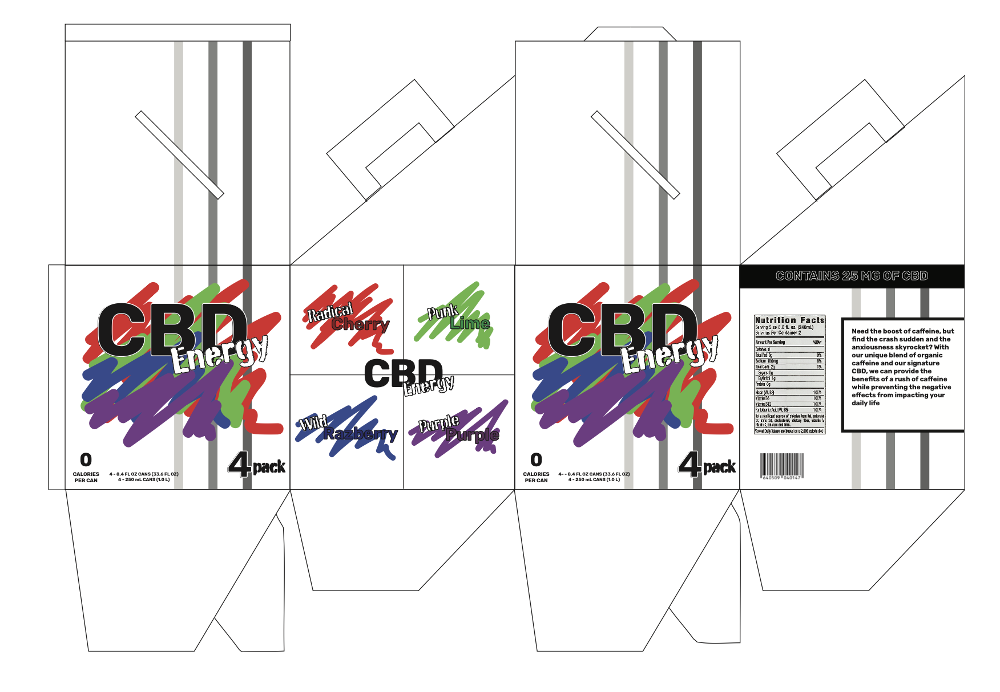

Grant Young Blogs: "My Work" Section


This is a typographic book that I made to match the lyrics to Tell Me Why by Penpals. It's a great song with an amazing video which perfectly captures the lyrics of the song as well as one of THE guitar riffs of all time. It was rather difficult trying to figure out how I wanted to lay things out on each page of the book, but thankfully the song is really weird so I felt less restrictions on how I layed things out.

This is a type specimen poster I made for the typeface Skia. The hardest part of trying to create the poster was not the technical elements, or that I was limited to using Skia. Rather, the hard part was trying to figure out how to balence things out. Admittidly, it's something I struggle with across all of my projects, but I'd say here I managed to find a reasonable solution.

This is a poster mailer that I made for the Colorado Symphony. Not gonna lie, this was kind of a pain. It's one think to know what you need to do to make something look good. It's another thing to make the thing. However, for as much as I complain, I feel making this mailer was good experience in not only closing the gap between knowledge and skill, but also defining my overall style for making stuff (though I still have to complain about the obsurd amount of meaningless text that I needed to though in here.
This is a product mockup I made for an energy drink. In some ways, this project was quite a pain and was a slog to get through. On the other hand though, this was probably one of the more rewarding things I've worked on in quite a while. It felt pretty good getting to design and work on something that I could realisticially see myself working on.

And now, for one of the few things I made not for a class, but because I wanted to. I love Smash Bros so one thing I wanted to do was make some promotion-esk posters for some of the characters. I've done some for a few characters (Including all the DLC fighters in Smash Ultimate), but this one is probably my favorite out of all of them. Funny enough though, this is also the first poster I made. I just feel it culminates how I wanted to approach making these posters the best.